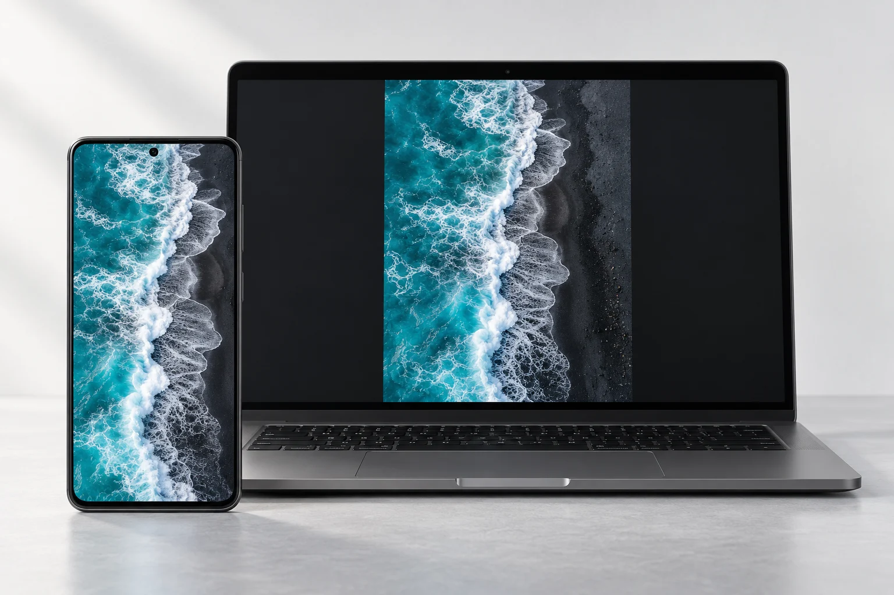
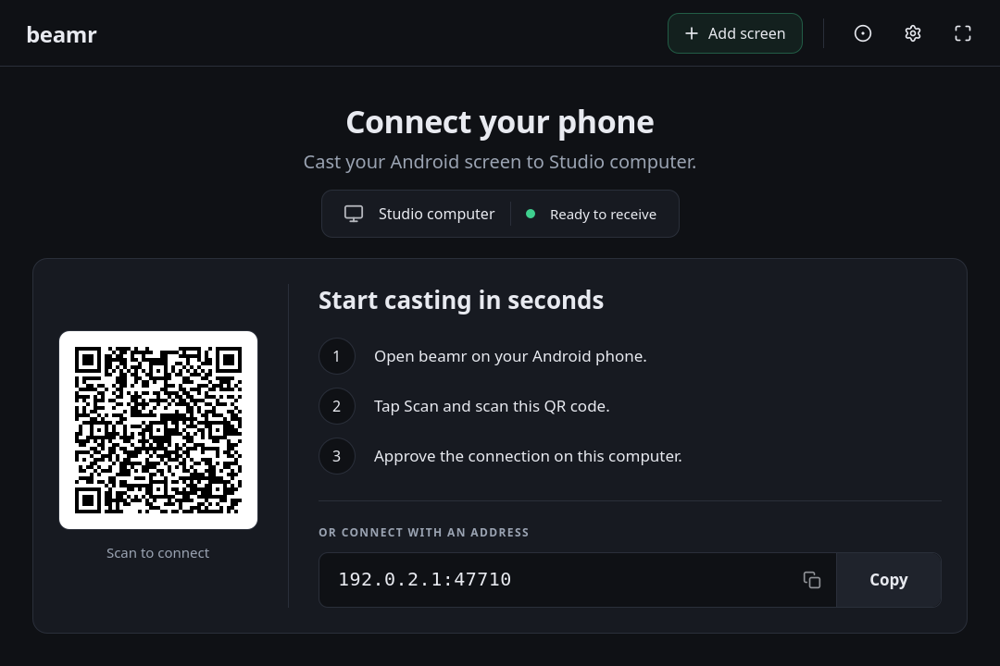
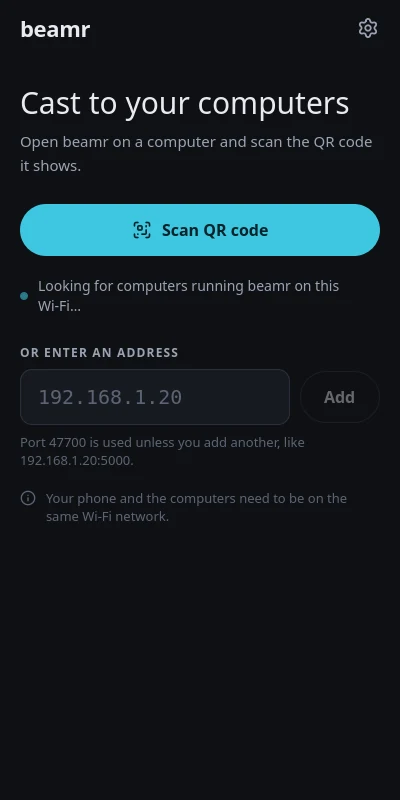

Made for the same Wi-Fi
Send your screen directly across your local network. No account or cloud relay to set up.
A bigger view of your Android.
Mirror your Android screen and sound to your computer over Wi-Fi. Free, open source, and easy to start.

From your Android.
To your computer.
Walk through an app. Share a video. Record a demo.
Give whatever is on your phone a little more space.


The beamr desktop and Android apps. Example connection details shown.
Send your screen directly across your local network. No account or cloud relay to set up.
Show up to four phones side by side. Focus on one, or pop a screen into its own window.
Record a cast to MP4, save a screenshot, or pause the picture when you need a closer look.
Share supported app audio and choose which phone you hear. Your microphone stays out of the mix.
Less setup. More sharing.
Start with your phone and computer on the same Wi-Fi network.
Install the Android app on your phone and the receiver on your computer. Open beamr on both.
Scan the computer’s QR code from your phone, or choose your computer under Nearby.
Accept any connection request, then allow Android screen capture. Share your whole screen or a single app when offered.
Get the latest release for both devices. All downloads are free.
Your phone is where the cast begins.
Download APKOpen the APK on your phone. Android may ask you to allow installs from your browser.
No. beamr sends screen and audio data directly between your phone and computers on the same local network. You don’t need an account. Use a network you trust.
Check that both devices are on the same Wi-Fi and your firewall allows beamr. Guest networks may prevent devices from connecting to each other. You can also scan the QR code or enter the address shown on the computer.
Turn on Cast sound before you start. Android only lets beamr capture audio from apps that allow it. Calls and protected audio stay silent, and beamr never captures the microphone.
Open the DMG and copy beamr to Applications. This Apple silicon build is not yet signed. If macOS blocks it, follow Apple’s instructions for opening an app from an unidentified developer, after confirming you downloaded it from this repository.
beamr currently sends from Android phones to computers running Windows, macOS, or Linux. There’s no iPhone sender or standalone smart TV app. You can connect your computer to a larger display.
Yes. Both apps are built with Qt 6 and QML. The project is open source under the MIT license, with separately licensed dependencies. Find build instructions and third-party notices in the repository.
Read the code, report a bug, or help make beamr better.